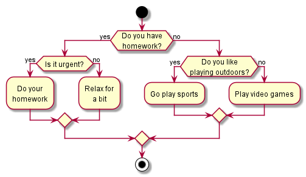
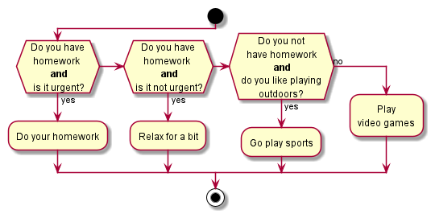
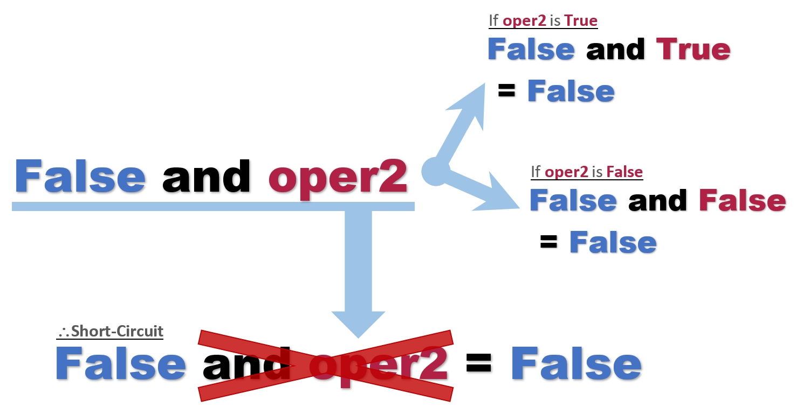
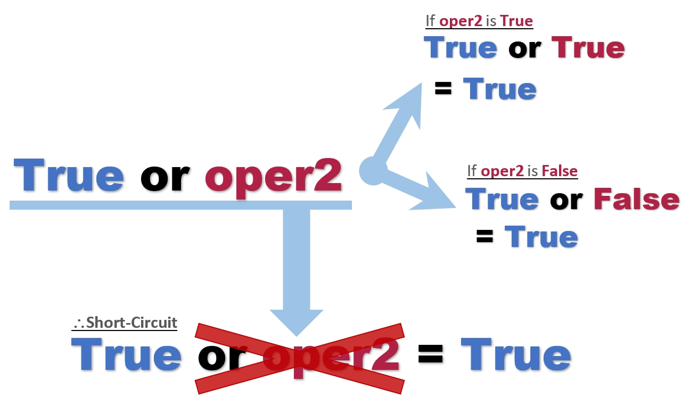

1. Chapter 1
2. Chapter 2
3. Chapter 3
4. Chapter 4 - Conditional Statements
Conditional, also known as branching statements, can be used to allow your program make decisions based on certain conditions…but what does this mean? Let’s look at an example.
Let’s look at the decisions you might make during your typical day.
| Condition | Action |
|---|---|
If you are hungry |
Then you eat food |
If you are thirsty |
Then you drink water |
If you have homework |
Then you finish your homework |
If you are bored |
Then you play games |
If you are tired |
Then you go to sleep |
As shown above, based on some conditions, the actions you may take are different. However, what if you are bored and have homework? What will you do? To account for such situations, you need to establish a more concrete set of conditions. As such, it is essential to come up with appropriate conditions and the actions that follow.
4.1. if Statements
An if statement in Python has the following structure:
if Statement1 if <condition>:
2 <action>The part indicated by <condition> must be a boolean value, variable holding a boolean value, or an expression that evaluates to a boolean value, and the part marked as <action> can be anything, ranging from variable assignments to writing print() statements. <action> is executed if and only if <condition> evaluates to the boolean value True. For example:
1 x = 5
2 y = 10
3
4 if x > y: # False
5 print('x is greater than y')
6 if x < y: # True
7 print('x is less than y')x is less than y
Let’s take a look at the example line by line.
-
At lines 1-2, the interpreter creates two variables,
xandy. -
At line 4, the interpreter evaluates the expression inside the if statement, and we can see that
x > yevaluates toFalse. -
Since the condition evaluates to
False, the interpreter does not read line 5 and skips to line 6. For any if statement, if the condition evaluates toFalse, the interpreter will skip the if block and go straight to the next section. -
At line 6, the condition evaluates to
True. Therefore, the interpreter will enter the block and read line 7, thus printingx is less than yon the CLI.
Hence, only line 7 is executed.
Also, a crucial part to note is that codes you write for the <action> section must be one indent rightward compared to the <condition> statement. For example:
1 if is_hungry:
2 print('Get up')
3 print('Go to kitchen')
4 print('Cook food')
5 print('Eat food')In the above example, lines 2-5 would be executed if the variable is_hungry is holding the boolean value True. It is different, however, to the next example.
1 if is_hungry:
2 print('Get up')
3 print('Go to kitchen')
4 print('Cook food')
5 print('Eat food')In this example, lines 2-4 would be executed if is_hungry is True. However, line 5 would be executed regardless of the boolean value that is stored in is_hungry.
If is_hungry is False:
Eat food
1 x = 5
2 if x % 2 == 0:
3 print('x is even')
4 if x % 2 != 0:
5 print('x is odd')x is odd
1 name = 'John'
2 if name == 'Steve' or name == 'John':
3 print('Hi', name)
4 if name.startswith('J'):
5 print('Your name starts with a J')Hi John Your name starts with a J
4.2. else and elif Statements
else and elif (short for else if) statements are used when we want to designate an action for the program to take when the condition for if statement is not taken. Hence, they are also referred to as alternative executions.
if <cond1>:
<action1>
elif <cond2>:
<action2>
else:
<action3><action1>(if block) is executed if and only if:-
<cond1>evaluates toTrue <action2>(elif block) is executed if and only if:-
<cond1>evaluates toFalse, and<cond2>evaluates toTrue <action3>(else block) is executed if and only if:-
<cond1>and<cond2>both evaluate toFalse
This means that the above is equivalent to writing:
if <cond1>:
<action1>
if <not cond1 and cond2>:
<action2>
if <not cond1 and not cond2>:
<action3>This may seem trivial at first, but it is crucial that you understand this concept well to correctly utilize if statements in larger programs.
So suppose that <cond1> evaluates to True:
-
The interpreter moves to line 1 and sees that condition is
True. So it moves to line 2 and executes<action1>. -
Since the if block was entered, the interpreter skips the corresponding
elifandelseblocks. Hence, none of<action2>or<action3>is executed.
Likewise, in the chain of conditional statements, if the interpreter enters one block, it will skip all the subsequent blocks. This is an example of short-circuiting and will be covered below.
Evaluate the output of the following program:
1 x, y = 5, 10
2 if x < y:
3 print('This is the if block')
4 print('x < y')
5 elif x <= y:
6 print('This is the elif block')
7 print('x <= y')
8 else:
9 print('This is the else block')
10 print('x >= y')This is the if block x < y
Even though both x < y (line 2) and x <= y (line 4) are true, since the interpreter enters the if block first, the elif block is skipped and thus, not executed.
Short-Circuiting
Short-circuiting is the act of terminating an operation or a check prematurely for optimization purposes. Remember that in a chain of if-elif-else statements, if one block is entered, Python will prematurely terminate the condition checks of the rest of the if statements and skip over to the next section.
Let’s look at the following example:
1 x, y = 5, 10
2
3 if x < y: # True
4 print('if-block is entered')
5 elif what_is_this: # not checked
6 print('This condition is not checked')if-block is entered
Even though we do not have a variable named what_is_this, the Python interpreter does not raise an exception when we execute the program. This blatantly shows that since the condition in the if statement on line 3 was True, the interpreter executed the action in line 4 and skipped over the rest of the chain. Although you should not do something like this in your program, this example effectively shows what short-circuiting is doing.
Get a user input for an integer number. If the number is divisible by 3, print the quotient, and if it is not, print the resulting remainder when the number is divided by 3.
1 num = int(input('Please enter an integer number: '))
2 if num % 3 == 0:
3 print(num // 3)
4 else:
5 print(num % 3)Get user input of two strings. Print the first string if the first string is a substring of the second string. If it is not, print the second string. A string is a substring of another if it is contained inside the other string. For example, 'cat' is a substring of 'catnip', and 'dog' is a substring of 'hotdog'
1 str1, str2 = input(), input()
2 if str1 in str2:
3 print(str1)
4 else:
5 print(str2)Get a user input of a number between 0 and 100 (inclusive). This number represents a student's score. Print the letter grade that corresponds to the number value in the following scale: * A (90 <= grade <= 100) * B (80 <= grade < 90) * C (70 <= grade < 80) * D (60 <= grade < 70) * F ( 0 <= grade < 60) Assume user input is always correct.
1 grade = int(input("Enter student's score (0-100): "))
2 if grade <= 100 and grade >= 90:
3 print('A')
4 elif grade >= 80:
5 print('B')
6 elif grade >= 70:
7 print('C')
8 elif grade >= 60:
9 print('D')
10 else:
11 print('F')4.3. Nested If Statements
It is possible to use if statements inside an if statement, which is called a nested if statement.
if <cond>:
<action1>
else:
if <inner_cond>:
<action2>
else:
<action3>The two inner if-else blocks will be reached if and only if <cond> evaluates to False.
This would be the same as writing:
if <cond>:
<action1>
elif <inner_cond>:
<action2>
else:
# Or elif <not cond and not inner_cond>:
<action4>As you can see, the second example has only one level of indentation, while the first had two levels. Whenever appropriate, the second method is preferred. However, in some cases, the first example may be more readable and useful to group certain conditions together. For example, look at the following case:

|
|

|
|
The first image is a depiction of a nested if statement, while the second image is a depiction of a chained if statement. In this case, the first image is much more readable and easy to understand than the second. If we were to write a chained if statement, we would have to check the condition has_hw twice (first in line 1 and second in line 3). As such, you should avoid nested ifs when possible but use them when appropriate.
1 # What is the output when i = 2, 4, 25, 50, 100
2 i = 2
3 if i % 2 == 0:
4 if i % 4 == 0:
5 print('First print statement')
6 else:
7 print('Second print statement')
8 else:
9 print('Third print statement')i = 2 : Second print statement i = 4 : First print statement i = 25 : Third print statement i = 50 : Second print statement i = 100: First print statement
Rewrite the program shown in Exercise 4.6 using three if statements (if, elif, else count as one).
1 i = 2
2 if i % 4 == 0: # or if i % 2 == 0 and i % 4 == 0
3 print('First print statement')
4 elif i % 2 == 0: # or if i % 2 == 0 and i % 4 != 0
5 print('Second print statement')
6 else: # or if i % 2 != 0
7 print('Third print statement')4.4. Challenge: if and Different Data Types
In Python, all values of every data type correspond to a boolean value.
| Value | Corresponding Boolean Value |
|---|---|
|
|
|
|
|
|
|
|
|
|
|
|
|
|
|
|
The rest |
|
|
Note
|
The keyword None represents a null value (different to 0, 0.0, '', etc). Any variable with a None value is essentially empty and void.
|
Such values evaluate to their corresponding boolean value when used with the keywords if, elif, else, and not, and the Python function bool(). You can memorize this by remembering that all the "empty" values of each data type corresponds to False, and the rest is True.
1 empty_int, empty_float, empty_str = 0, 0.0, ''
2 empty_list, empty_tup, empty_dict = [], (), {}
3
4 print(bool(empty_int))
5 print(not empty_float)
6 if not empty_str:
7 print('str is empty!')
8 if not empty_list:
9 print('list is empty!')
10 if not empty_tup:
11 print('tuple is empty!')
12 if not empty_dict:
13 print('dictionary is empty!')False True str is empty! list is empty! tuple is empty! dictionary is empty!
As such, this property can be used to check if an iterable is empty (i.e. does not contain any elements/characters), just like the example did with the if-statements.
4.5. Challenge: Short-Circuiting of Logical Expressions
|
Note
|
Short-circuiting was explained briefly before in this section. |
Remember logical expressions? They are expressions with logical operators, which, in Python, are and, or, and not.
To briefly recap, and and or are binary operators, which means they operate on two operands, and not is a unary operator, which means it has one operand. The and operator evaluates to True if both operands are True, and on the contrary, the or operator evaluates to False if both operands are False.
In other words, if any one of the operands of the and operator is False, the expression will evaluate to False. Likewise, if any one of the operands of the or operator is True, the expression will evaluate to True. How can we use this information to optimize the speed of the and and or operations?
Let’s look at the following example:
1 # 1 / 0 -> division by zero should cause Python to raise an exception
2 print(False and 1 / 0)
3 print(True or 1 / 0)False True
First of all, for any logical operators, the operands must be of a boolean type (which 1 / 0 is not), and second of all, 1 / 0 is dividing by zero, which should cause Python to raise the ZeroDivisionError (Try it out yourself on Python shell!). So judging by these facts, Python should have raised an exception when we tried to execute the previous program, but why were False and True printed without any problem?
This is because Python exhibits a behavior called short-circuiting when performing logical operations, which means the interpreter prematurely terminates the evaluation of logical expressions on certain occasions.
Short-circuiting for |
|
|---|---|

|
For an
Therefore, Python skips the evaluation of the second operand all together. |
Short-circuiting for |
|

|
For an
Therefore, Python skips the evaluation of the second operand all together. |
Use Cases
Example 1
Let’s say at CSM Amusement Park, a ticket is discounted by 15% for people with ages under 7 or over 60. As the IT manager, you implement the following piece of code:
1 age = int(input('What is your age? '))
2 if age < 7 or age > 60:
3 # Discount ticket priceIf the user inputs 6 as their age, at line 2, Python will evaluate age < 7 and see that it is True. Since the user already qualifies to get a discount, there is no reason for Python to check if the user’s age is over 60 (age > 60) once more.
Example 2
In order to graduate from CSM University, you need to have taken at least 120 credits of courses and have written a thesis paper. The program that checks if a student is eligible to graduate has the following piece of code:
1 std_id = # get student ID
2 if course_crd(std_id) >= 120 and has_written_thesis(std_id):
3 # Allow student to apply for graduation|
Note
|
Suppose course_crd(std_id) returns the course credits of the student with corresponding std_id, and has_written_thesis(std_id) returns True if that student has written a thesis paper and False if not.
|
Suppose the student applying for graduation has taken 80 credits of courses. Then, the student is already ineligible for graduation, so there is no need for Python to check once more whether the student has written a thesis paper or not.
|
|
|
|
||
|---|---|---|---|---|---|
Output |
Will |
Output |
Will |
||
|
|
||||
|
|
||||
|
|
||||
|
|
||||
|
|
|
|
||
|---|---|---|---|---|---|
Output |
Will |
Output |
Will |
||
|
|
|
Yes |
|
No |
|
|
|
Yes |
|
No |
|
|
|
No |
|
Yes |
|
|
|
No |
|
Yes |
4.6. Practice Problems
A. Evaluate the output
A-1
1 a = 10
2 if a & 1 == 0:
3 a //= 2
4 else:
5 a = 3 * a + 1
6 print(a)Answer
5
A-2
1 lst = ['dog', 'cat', 'bird', 'mouse']
2 s = ''.join(sorted(lst))
3 if s.startswith('dog'):
4 print('Woof')
5 elif s.startswith('cat'):
6 print('Meow')
7 elif s.startswith('bird'):
8 print('Chirp')
9 else:
10 print('Squeak')Answer
Chirp
A-3
1 s = 'alpha'
2 if s.isalpha():
3 print('s only has alphabets')
4 if s.isalnum():
5 print('s has alphabets or numbers')
6 if s.isnumeric():
7 print('s only has numbers')Answer
s only has alphabets s has alphabets or numbers
B. Find any errors in following Python programs
B-1
1 grade = int(input()) # Assume input is correct
2 if grade >= 90 and grade <= 100:
3 print('A')
4 if grade >= 80:
5 print('B')
6 if grade >= 70:
7 print('C')
8 else:
9 print('F')Answer
Line 4, 6: Change if to elif
B-2
1 num = int(input()) # Assumer input is correct
2 if num % 2 == 1:
3 print('num is even')
4 else:
5 print('num is odd')Answer
Line 2: if num % 2 == 0: or Switch lines 3 and 5
B-3
1 lst = input().split()
2 if lst:
3 print('User input is empty')
4 else:
5 print('User input has {} words'.format(len(lst)))Answer
Line 2: Change to if not lst:
C. Write your own program
C-1
Suppose you are a teacher at an elementary school. Ask the students to input their hours of volunteer activities in integer forms. Give them extra credit points based on their volunteer hours:
Hours | Extra Credit
-------|-------------
0 | 0
1-4 | 5
5-8 | 10
9+ | 15
The range is inclusive. Print the extra credit earned. If their input is not valid, print an error message.
Answer
1 h = input('Volunteer Hours: ')
2 if not h.isnumeric():
3 print('Please enter a nonnegative integer value')
4 else:
5 h = int(h)
6 if h == 0:
7 print(0)
8 elif h <= 4:
9 print(5)
10 elif h <= 8:
11 print(10)
12 else:
13 print(15)C-2
Q1. Ask the user to input a nonnegative integer. If the input is correct, print a smiley face. If it is not, then print a sad face.
E.g. Input: 10 Output: :)
Input: hello Output: :(
Q2. Ask the user to input a nonnegative floating point number. If the input is correct, print a smiley face. If it is not, then print a sad face.
E.g. Input: 1.0 Output: :)
Input: 1 Output: :(
Input: 0.1 Output: :)
Input: .1 Output: :(
Hint: What makes an input a floating point number?
Answer
1 # Q1
2 num1 = input('Input a positive integer: ')
3 if num1.isnumeric():
4 print(':)')
5 else:
6 print(':(')
7
8 # Q2
9 num2 = input('Input a positive floating point number: ')
10 nums = num2.split('.')
11 if len(nums) == 2 and nums[0].isnumeric() and nums[1].isnumeric():
12 print(':)')
13 else:
14 print(':(')Additional Remarks
In order for the input to be a valid floating point number, the string must consist of all numbers except one decimal point. To check that, we can split the string by the decimal point and see if the first and second element of the list are numbers. len(nums) == 2 at line 11 is an example of utilizing short-circuiting. After the string is split by its decimal point, if the length is not 2, it means the user input is not a valid floating point number. Then there is no reason to check if nums[0] and nums[1] are numeric and can move onto the else block without evaluating the rest.
C-3
Suppose you built a program that performs different functions depending on the user commands. Take user input of two integers and a command word. How you take in the input is up to you. The following are the command words and the function your program will perform:
Command | Function
--------|------------------------------------------------------------
Add | Print the sum of the two numbers
Sub | Print the difference of the two numbers (in order of input)
Mult | Print the product of the two numbers
Div | Print the quotient of the two numbers (in order of input)
Your program should be case-insensitive. In other words, AdD, add, aDD should all trigger the Add command. Suppose for Div, the second number will never be zero. If the command is invalid or the first two inputs are not integers, print an error message.
Ex1) Input: 0, 1, Add
Output: 1
Ex2) Input: 3
2
div
Output: 1
Answer
1 a = input('Input an integer: ')
2 b = input('Input an integer: ')
3 c = input('Command: ').lower()
4
5 # Error check 1
6 if not a.isnumeric() or not b.isnumeric():
7 print('The first two inputs must be integers')
8 else:
9 a, b = int(a), int(b)
10 if c == 'add':
11 print(a + b)
12 elif c == 'sub':
13 print(a - b)
14 elif c == 'mult':
15 print(a * b)
16 elif c == 'div':
17 print(a // b)
18 else:
19 # Error condition 2
20 print('Command must either be add, sub, mult, or div')